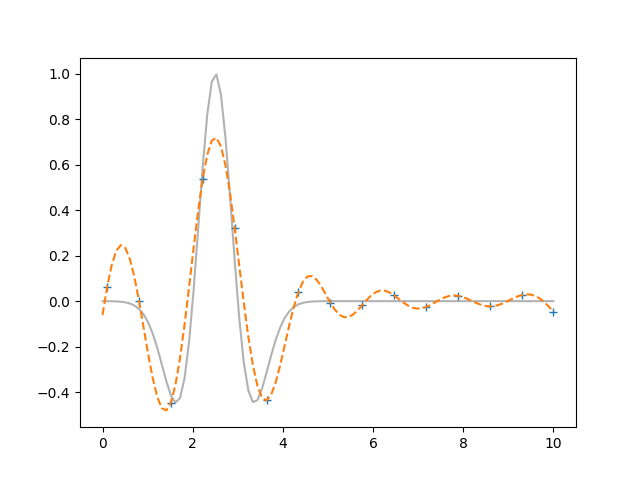

Note
Click here to download the full example code
Fitting the LFM Using the MLFM¶
Out:
[2.708 9.403 0.78 ]
[[1. 1. 0.5 0. ]
[0. 0. 0. 1. ]]
import numpy as np
import matplotlib.pyplot as plt
from sklearn.gaussian_process.kernels import RBF
from scipy.integrate import odeint
from pydygp.kernels import LFMOrder2Kernel, WhiteKernel
from pydygp.gaussian_process import MultioutGaussianProcessRegressor
from pydygp.linlatentforcemodels import MLFMAdapGrad
from pydygp.liealgebras import so
C = [0.5,]
D = [1.0,]
S = [1.0,]
A = np.array([[0., 1.],
[-D[0], -C[0]]])
def f(t):
z = (t - 2.5)/0.5
return np.exp(-.5*z**2)*(1-z**2)
def dXdt(X, t):
v = A.dot(X)
v[1] += S[0]*f(t)
return v
ttdense = np.linspace(0., 10., 100)
sol = odeint(dXdt, [0., 0.], ttdense)
tt = ttdense[1::7]
Y = sol[1::7, 0]
vecY = Y.T.ravel() # vectorisation of Y
kernel = LFMOrder2Kernel(C=C, D=D, S=S)
lfm = MultioutGaussianProcessRegressor(kernel)
_rv = lfm.sample_y(tt[:, None], n_samples=1, random_state=2)
lfm.fit(tt[:, None], vecY[:, None])
print(lfm.kernel_.theta)
L1 = np.array([[ 0., 1., 0.],
[ 0., 0., 0.],
[ 0., 0., 0.]])
L2 = np.array([[ 0., 0., 0.],
[-1., 0., 0.],
[ 0., 0., 0.]])
L3 = np.array([[ 0., 0., 0.],
[ 0.,-1., 0.],
[ 0., 0., 0.]])
L4 = np.array([[ 0., 0., 0.],
[ 0., 0., 1.],
[ 0., 0., 0.]])
beta = np.array([[1., 1., 0.5, 0.],
[0., 0., 0., 1.]])
_Y = sol[1::7]
s1 = np.random.normal(size=2)
s2 = np.random.normal(size=2)
Y1 = _Y + s1[None, :]
Y2 = _Y + s2[None, :]
_Z1 = np.column_stack((Y1, np.ones(tt.size)))
_Z2 = np.column_stack((Y2, np.ones(tt.size)))
Z = np.column_stack((sol[1::7], np.ones(tt.size)))
z = np.column_stack((_Z1.T.ravel(), _Z2.T.ravel()))
mlfm = MLFMAdapGrad((L1, L2, L3, L4), R=1, lf_kernels=[RBF(), ])
beta_fix_inds = np.array([[True, False, False, True],
[True, True, True, True]])
from pydygp.probabilitydistributions import Normal
beta_prior = Normal() * 3
res_ag = mlfm.fit(tt, Z.T.ravel()[:, None],
logpsi_is_fixed=True,
logphi_is_fixed=True,
beta_is_fixed=True, beta0=beta)
print(res_ag.beta)
Eg, SDg = mlfm.predict_lf(ttdense, return_std=True)
A = [sum(brd*Ld for brd, Ld in zip(br, (L1, L2, L3, L4)))
for br in res_ag.beta]
from scipy.interpolate import interp1d
u = interp1d(ttdense, Eg[0, :], kind='cubic', fill_value='extrapolate')
sol2 = odeint(lambda x, t: (A[0] + A[1]*u(t)).dot(x),
[0., 0., 1.], ttdense)
#fig, ax = plt.subplots()
#ax.plot(tt, Y, 'o')
#ax.plot(ttdense, sol2[:, :-1], '-', alpha=0.3)
fig2, ax2 = plt.subplots()
ax2.plot(ttdense, f(ttdense), 'k-', alpha=0.3)
ax2.plot(tt, res_ag.g.T, '+')
ax2.plot(ttdense, Eg.T, '--')
plt.show()
Total running time of the script: ( 0 minutes 1.272 seconds)